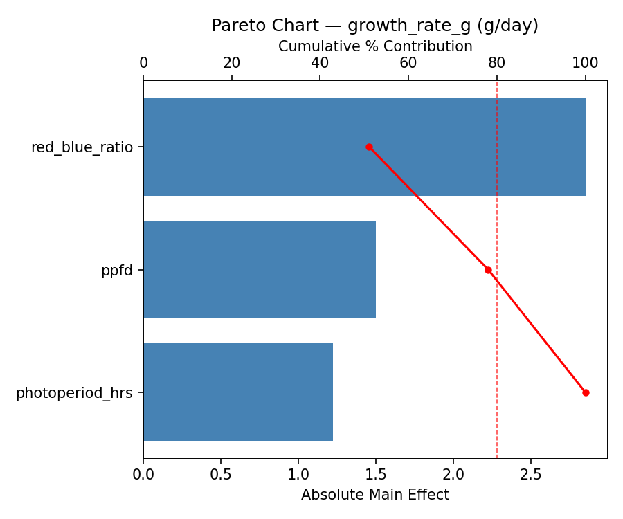
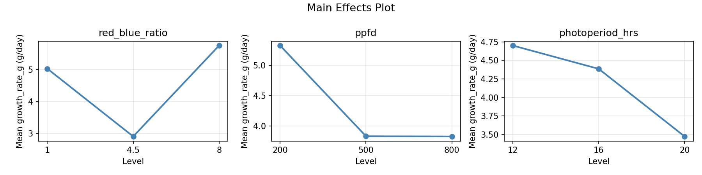
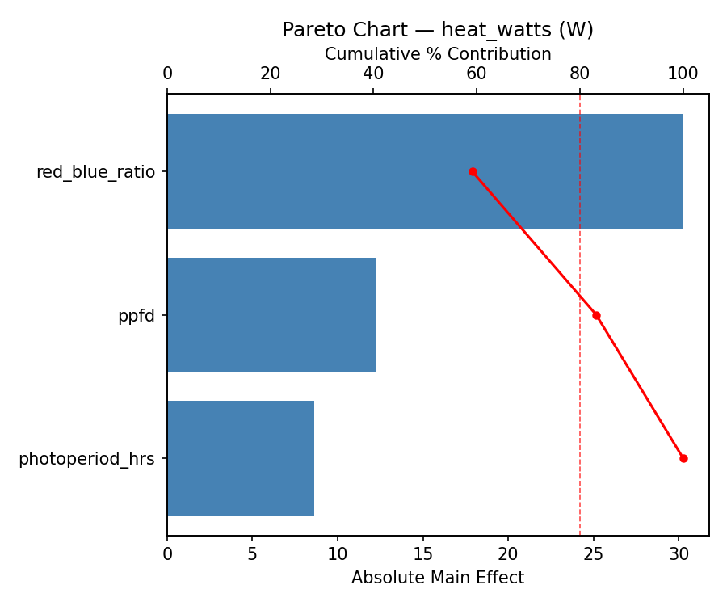
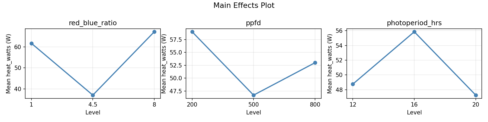
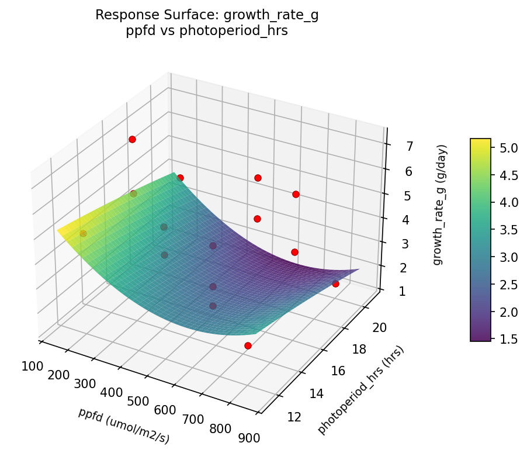
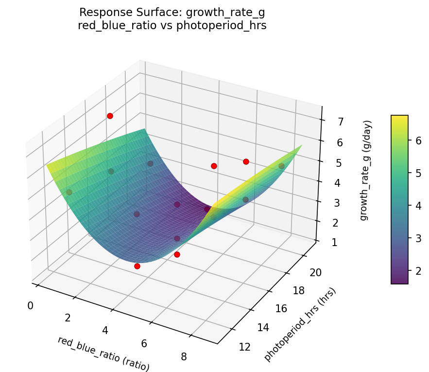
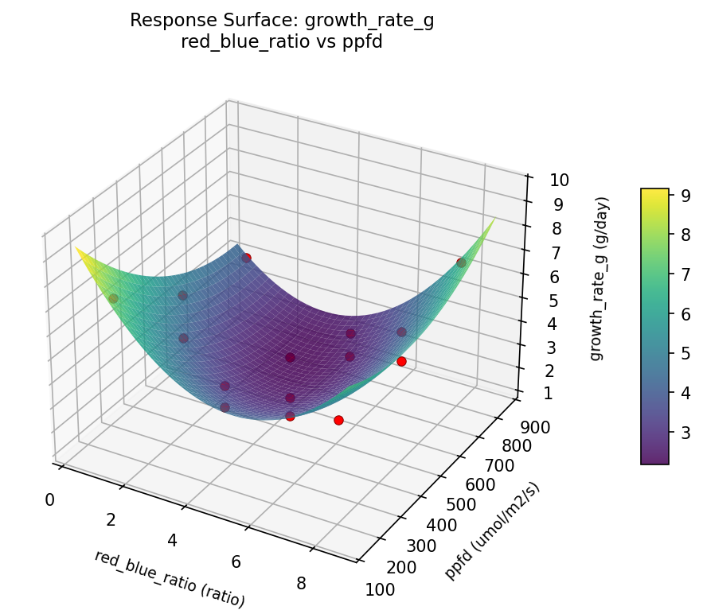
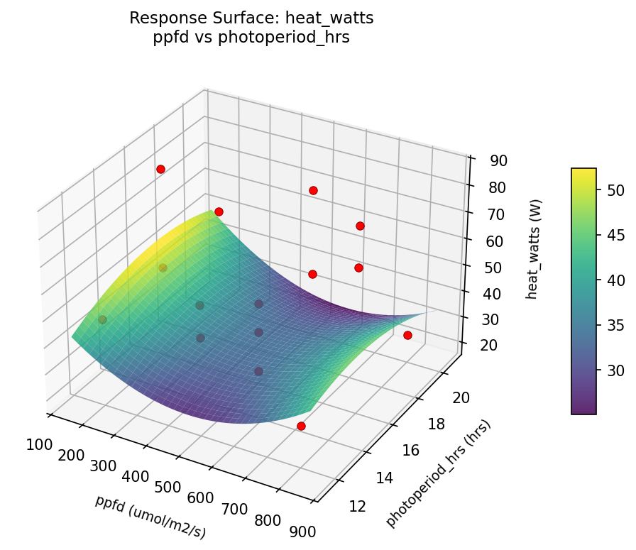
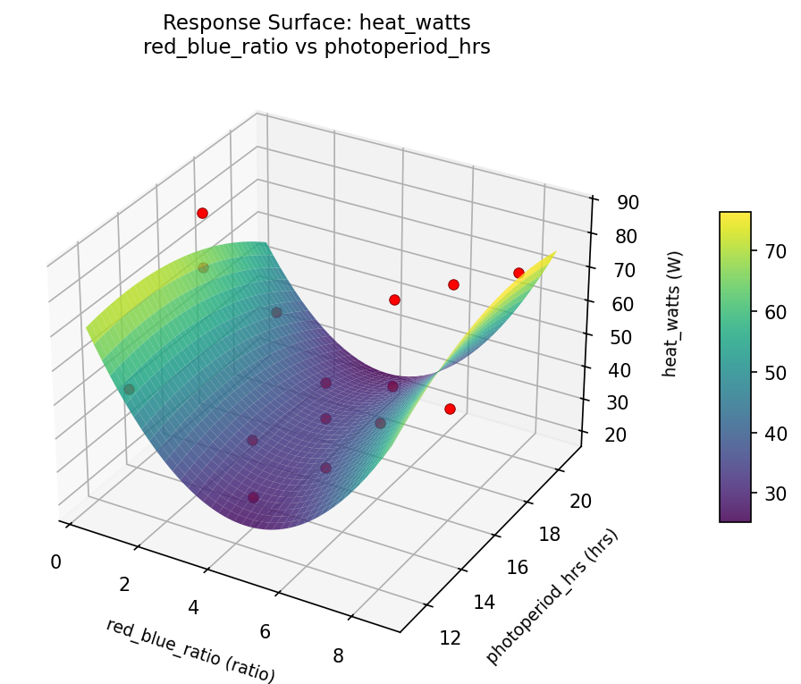
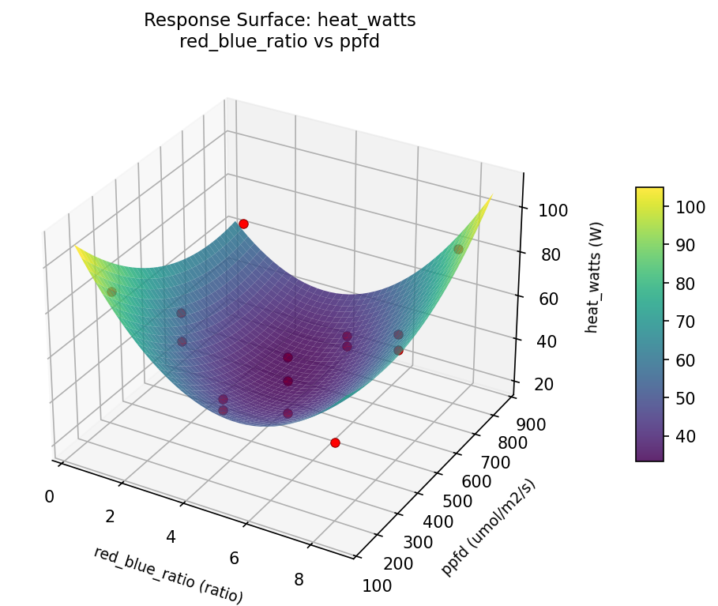

Summary
This experiment investigates led grow light spectrum. Box-Behnken design to maximize photosynthesis rate and minimize heat output by tuning red-to-blue ratio, intensity, and photoperiod.
The design varies 3 factors: red blue ratio (ratio), ranging from 1 to 8, ppfd (umol/m2/s), ranging from 200 to 800, and photoperiod hrs (hrs), ranging from 12 to 20. The goal is to optimize 2 responses: growth rate g (g/day) (maximize) and heat watts (W) (minimize). Fixed conditions held constant across all runs include plant type = leafy_greens, distance cm = 30.
A Box-Behnken design was chosen because it efficiently fits quadratic models with 3 continuous factors while avoiding extreme corner combinations — requiring only 15 runs instead of the 8 needed for a full factorial at two levels.
Quadratic response surface models were fitted to capture potential curvature and factor interactions. The RSM contour plots below visualize how pairs of factors jointly affect each response.
Key Findings
For growth rate g, the most influential factors were red blue ratio (51.1%), ppfd (26.9%), photoperiod hrs (22.0%). The best observed value was 7.2 (at red blue ratio = 4.5, ppfd = 500, photoperiod hrs = 16).
For heat watts, the most influential factors were red blue ratio (59.1%), ppfd (24.0%), photoperiod hrs (16.8%). The best observed value was 20.0 (at red blue ratio = 4.5, ppfd = 800, photoperiod hrs = 20).
Recommended Next Steps
- Run confirmation experiments at the predicted optimal settings to validate the model.
- Consider whether any fixed factors should be varied in a future study.
Experimental Setup
Factors
| Factor | Low | High | Unit |
|---|
red_blue_ratio | 1 | 8 | ratio |
ppfd | 200 | 800 | umol/m2/s |
photoperiod_hrs | 12 | 20 | hrs |
Fixed: plant_type = leafy_greens, distance_cm = 30
Responses
| Response | Direction | Unit |
|---|
growth_rate_g | ↑ maximize | g/day |
heat_watts | ↓ minimize | W |
Configuration
{
"metadata": {
"name": "LED Grow Light Spectrum",
"description": "Box-Behnken design to maximize photosynthesis rate and minimize heat output by tuning red-to-blue ratio, intensity, and photoperiod"
},
"factors": [
{
"name": "red_blue_ratio",
"levels": [
"1",
"8"
],
"type": "continuous",
"unit": "ratio"
},
{
"name": "ppfd",
"levels": [
"200",
"800"
],
"type": "continuous",
"unit": "umol/m2/s"
},
{
"name": "photoperiod_hrs",
"levels": [
"12",
"20"
],
"type": "continuous",
"unit": "hrs"
}
],
"fixed_factors": {
"plant_type": "leafy_greens",
"distance_cm": "30"
},
"responses": [
{
"name": "growth_rate_g",
"optimize": "maximize",
"unit": "g/day"
},
{
"name": "heat_watts",
"optimize": "minimize",
"unit": "W"
}
],
"settings": {
"operation": "box_behnken",
"test_script": "use_cases/133_led_grow_light/sim.sh"
}
}
Experimental Matrix
The Box-Behnken Design produces 15 runs. Each row is one experiment with specific factor settings.
| Run | red_blue_ratio | ppfd | photoperiod_hrs |
|---|
| 1 | 4.5 | 200 | 12 |
| 2 | 4.5 | 500 | 16 |
| 3 | 8 | 500 | 20 |
| 4 | 8 | 500 | 12 |
| 5 | 4.5 | 500 | 16 |
| 6 | 4.5 | 500 | 16 |
| 7 | 1 | 500 | 20 |
| 8 | 8 | 200 | 16 |
| 9 | 4.5 | 200 | 20 |
| 10 | 8 | 800 | 16 |
| 11 | 1 | 500 | 12 |
| 12 | 4.5 | 800 | 20 |
| 13 | 1 | 200 | 16 |
| 14 | 1 | 800 | 16 |
| 15 | 4.5 | 800 | 12 |
Step-by-Step Workflow
1
Preview the design
$ python doe.py info --config use_cases/133_led_grow_light/config.json
2
Generate the runner script
$ python doe.py generate --config use_cases/133_led_grow_light/config.json \
--output use_cases/133_led_grow_light/results/run.sh --seed 42
3
Execute the experiments
$ bash use_cases/133_led_grow_light/results/run.sh
4
Analyze results
$ python doe.py analyze --config use_cases/133_led_grow_light/config.json
5
Get optimization recommendations
$ python doe.py optimize --config use_cases/133_led_grow_light/config.json
6
Generate the HTML report
$ python doe.py report --config use_cases/133_led_grow_light/config.json \
--output use_cases/133_led_grow_light/results/report.html
Features Exercised
| Feature | Value |
|---|
| Design type | box_behnken |
| Factor types | continuous (all 3) |
| Arg style | double-dash |
| Responses | 2 (growth_rate_g ↑, heat_watts ↓) |
| Total runs | 15 |
Analysis Results
Generated from actual experiment runs using the DOE Helper Tool.
Response: growth_rate_g
Top factors: red_blue_ratio (51.1%), ppfd (26.9%), photoperiod_hrs (22.0%).
Pareto Chart

Main Effects Plot

Response: heat_watts
Top factors: red_blue_ratio (59.1%), ppfd (24.0%), photoperiod_hrs (16.8%).
Pareto Chart

Main Effects Plot

Response Surface Plots
3D surfaces fitted with quadratic RSM. Red dots are observed data points.
growth rate g ppfd vs photoperiod hrs

growth rate g red blue ratio vs photoperiod hrs

growth rate g red blue ratio vs ppfd

heat watts ppfd vs photoperiod hrs

heat watts red blue ratio vs photoperiod hrs

heat watts red blue ratio vs ppfd

Full Analysis Output
RSM surface: rsm_growth_rate_g_red_blue_ratio_vs_ppfd.png
RSM surface: rsm_growth_rate_g_red_blue_ratio_vs_photoperiod_hrs.png
RSM surface: rsm_growth_rate_g_ppfd_vs_photoperiod_hrs.png
RSM surface: rsm_heat_watts_red_blue_ratio_vs_ppfd.png
RSM surface: rsm_heat_watts_red_blue_ratio_vs_photoperiod_hrs.png
RSM surface: rsm_heat_watts_ppfd_vs_photoperiod_hrs.png
=== Main Effects: growth_rate_g ===
Factor Effect Std Error % Contribution
--------------------------------------------------------------
red_blue_ratio 2.8500 0.4708 51.1%
ppfd 1.5000 0.4708 26.9%
photoperiod_hrs 1.2250 0.4708 22.0%
=== Summary Statistics: growth_rate_g ===
red_blue_ratio:
Level N Mean Std Min Max
------------------------------------------------------------
1 4 5.0250 1.6317 3.3000 7.2000
4.5 7 2.9000 1.4130 1.3000 5.0000
8 4 5.7500 0.9000 5.0000 6.8000
ppfd:
Level N Mean Std Min Max
------------------------------------------------------------
200 4 5.3250 1.3200 4.1000 7.2000
500 7 3.8286 1.7452 1.3000 6.2000
800 4 3.8250 2.3429 1.5000 6.8000
photoperiod_hrs:
Level N Mean Std Min Max
------------------------------------------------------------
12 4 4.7000 1.5642 2.5000 6.2000
16 7 4.3857 2.2071 1.3000 7.2000
20 4 3.4750 1.4886 1.5000 5.0000
=== Main Effects: heat_watts ===
Factor Effect Std Error % Contribution
--------------------------------------------------------------
red_blue_ratio 30.2500 5.2251 59.1%
ppfd 12.2857 5.2251 24.0%
photoperiod_hrs 8.6071 5.2251 16.8%
=== Summary Statistics: heat_watts ===
red_blue_ratio:
Level N Mean Std Min Max
------------------------------------------------------------
1 4 61.7500 20.5649 39.0000 86.0000
4.5 7 37.0000 12.3018 20.0000 53.0000
8 4 67.2500 14.9750 49.0000 85.0000
ppfd:
Level N Mean Std Min Max
------------------------------------------------------------
200 4 59.0000 18.1292 48.0000 86.0000
500 7 46.7143 17.4520 20.0000 71.0000
800 4 53.0000 29.0172 26.0000 85.0000
photoperiod_hrs:
Level N Mean Std Min Max
------------------------------------------------------------
12 4 48.7500 13.6473 31.0000 64.0000
16 7 55.8571 25.2417 20.0000 86.0000
20 4 47.2500 19.2938 26.0000 71.0000
Pareto chart (growth_rate_g): use_cases/133_led_grow_light/results/analysis/pareto_growth_rate_g.png
Pareto chart (heat_watts): use_cases/133_led_grow_light/results/analysis/pareto_heat_watts.png
Main effects (growth_rate_g): use_cases/133_led_grow_light/results/analysis/main_effects_growth_rate_g.png
Main effects (heat_watts): use_cases/133_led_grow_light/results/analysis/main_effects_heat_watts.png
Optimization Recommendations
=== Optimization: growth_rate_g ===
Direction: maximize
Best observed run: #12
red_blue_ratio = 4.5
ppfd = 500
photoperiod_hrs = 16
Value: 7.2
RSM Model (linear, R² = 0.0899, Adj R² = -0.1584):
Coefficients:
intercept +4.2267
red_blue_ratio +0.1875
ppfd -0.4875
photoperiod_hrs -0.5000
RSM Model (quadratic, R² = 0.5607, Adj R² = -0.2299):
Coefficients:
intercept +4.0000
red_blue_ratio +0.1875
ppfd -0.4875
photoperiod_hrs -0.5000
red_blue_ratio*ppfd +1.3500
red_blue_ratio*photoperiod_hrs +0.8750
ppfd*photoperiod_hrs -0.3750
red_blue_ratio^2 +0.8500
ppfd^2 -1.2000
photoperiod_hrs^2 +0.7750
Curvature analysis:
ppfd coef=-1.2000 concave (has a maximum)
red_blue_ratio coef=+0.8500 convex (has a minimum)
photoperiod_hrs coef=+0.7750 convex (has a minimum)
Notable interactions:
red_blue_ratio*ppfd coef=+1.3500 (synergistic)
red_blue_ratio*photoperiod_hrs coef=+0.8750 (synergistic)
ppfd*photoperiod_hrs coef=-0.3750 (antagonistic)
Predicted optimum (from linear model):
red_blue_ratio = 4.5
ppfd = 200
photoperiod_hrs = 12
Predicted value: 5.2142
Model quality: Weak fit — consider adding center points or using a different design.
Factor importance:
1. ppfd (effect: 1.8, contribution: 43.2%)
2. photoperiod_hrs (effect: 1.3, contribution: 31.2%)
3. red_blue_ratio (effect: 1.1, contribution: 25.6%)
=== Optimization: heat_watts ===
Direction: minimize
Best observed run: #1
red_blue_ratio = 4.5
ppfd = 800
photoperiod_hrs = 20
Value: 20.0
RSM Model (linear, R² = 0.0245, Adj R² = -0.2416):
Coefficients:
intercept +51.6667
red_blue_ratio +2.3750
ppfd -2.5000
photoperiod_hrs -2.3750
RSM Model (quadratic, R² = 0.5433, Adj R² = -0.2788):
Coefficients:
intercept +50.3333
red_blue_ratio +2.3750
ppfd -2.5000
photoperiod_hrs -2.3750
red_blue_ratio*ppfd +7.7500
red_blue_ratio*photoperiod_hrs +2.0000
ppfd*photoperiod_hrs -6.7500
red_blue_ratio^2 +10.0833
ppfd^2 -19.6667
photoperiod_hrs^2 +12.0833
Curvature analysis:
ppfd coef=-19.6667 concave (has a maximum)
photoperiod_hrs coef=+12.0833 convex (has a minimum)
red_blue_ratio coef=+10.0833 convex (has a minimum)
Notable interactions:
red_blue_ratio*ppfd coef=+7.7500 (synergistic)
ppfd*photoperiod_hrs coef=-6.7500 (antagonistic)
red_blue_ratio*photoperiod_hrs coef=+2.0000 (synergistic)
Predicted optimum (from linear model):
red_blue_ratio = 4.5
ppfd = 200
photoperiod_hrs = 12
Predicted value: 56.5417
Model quality: Weak fit — consider adding center points or using a different design.
Factor importance:
1. ppfd (effect: 23.8, contribution: 45.8%)
2. photoperiod_hrs (effect: 15.1, contribution: 29.2%)
3. red_blue_ratio (effect: 13.0, contribution: 25.1%)